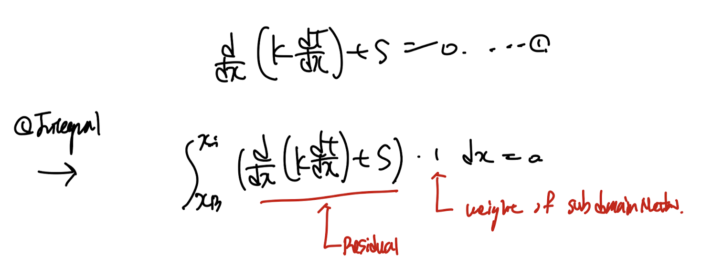
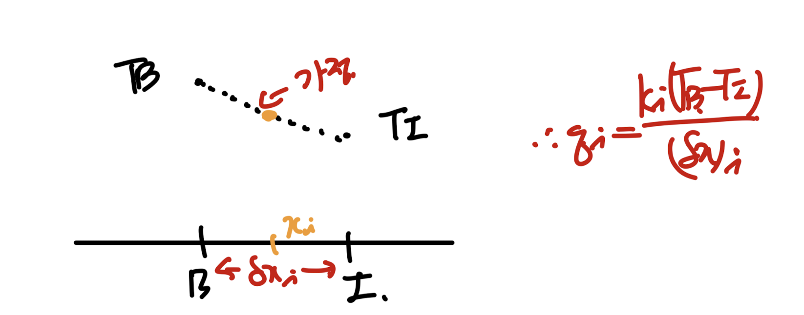
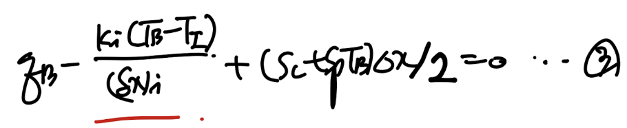
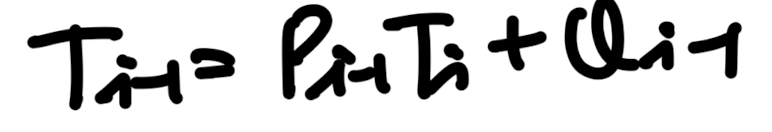
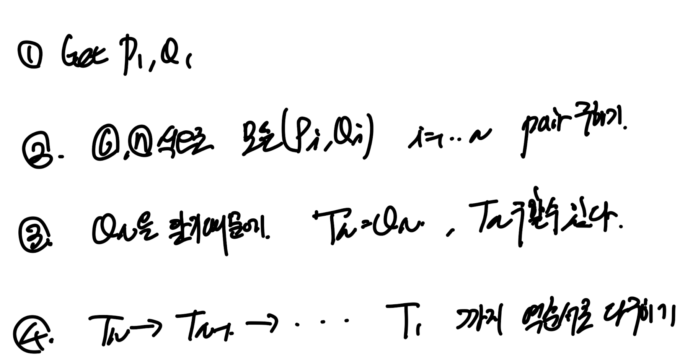

Ch4 Heat conduction - part3 (Boundary Conditions, TDMA)
Numerical Method- control volume method를 실제로 풀어보면,
가장 어려운 부분이 Boundary condition을 어떻게 설정하냐 이다.
Heat conduction 문제에서 자주 나오는 boundary condition 다음 3개에 대해서
각각 어떤 algebriac Eq으로 전환되는 지를 차근차근 살펴보자.
1. Dirichlet Boundary Conditoin - Temperature is given
2. Neuman Boundary Condition - Heat flux is given
3. Robin Boundary Conditoin - Heat flux w/ Temperature Funciton.
1. Dirichlet Boundary Conditoin - Temperature is given

가장 간단하다. 그냥 온도 값을 위 식에 대입하면 식이 완성이다.
P에서의 온도를 구할때 E에서의 온도가 주어졌다고, 위 식에 TE를 대입하면 P에 대한 CV식이 완성된다.

그렇기 때문에 이제 노드의 위치를 온도가 주어진 boundary위에 위치하도록 하는것이 적절하다.
(실제 문제를 풀면서 이게 무슨 말인지 살펴보자)
2. Neuman Boundary Condition - Heat flux is given(q_B is given)
heat flux가 주어진 경우 우리는 다음과 같이 half contol volume을 설계하고(점 B에 대해)
그리고 그 control volume에서의 식을 유도해야한다.

q_B 가 주어졌다고 가정하자. 단열인 경우는 q_B = 0
우리가 풀려고 하는 1D steady heat conduction eq w/ source term은 1번과 같다.
이를 integral 해주자.

grid length =
Δx/2 임을 명심하자.

여기서 우리가 배운 qi, s를 처리하는 방법을 적용하자.

ch3에서 다룬 내용 how to deal w/ diffusion term.
까먹었을 수도 있으니 qi를 어떻게 유도했는지 살펴보면,
TB, TI 사이의 함수 profile을 알아야 xi에서의 dT/dx를 알아 qi를 계산할 수 있다.
우리는 가장 간단한 linear profile을 택하여 다음과 같이 qi를 구한 것이다.

따라서, 만약에 q_B가 주어진 상황이라면, 이 식에 q_B를 대입하여 3번식을 완성하면
half control volume 에 대한 식이 완성된다.

즉, 우리가 piece wise profile을 qi를 구할때처럼 하지 않아도 된다는 말이다
3. Robin Boundary Conditoin - Heat flux w/ Temperature Funciton.
마지막 robin profile은 자연대류 boundary condition일때 어떻게 해야하는지 이다.
사실 위에 heat flux is given case와 동일하다.

오른쪽 벽면에서 자연대류가 있는 경우.
위 문제는 Steady 2D Heat conduction problem이고, TP 기준 Control volume에 관한 식을 세우는 과정이다.
결론적으로 q''_e = h(T_inf - T-P) - 자연대류 식
을 이용하여 heat flux를 위 식으로 replace해준 형태이다.

자 여기까지 boundary condition 설정을 끝냈다면,
이제 모든 control volume에 대해서 방정식을 어떻게 세워야 하는지를
우리는 터득한 것이다.
즉 밑의 임의의 상자에 대해서 5번의 식을 도출 할 수 있다.


이렇게 1 -> N 까지의 Control Volume이 존재한다고 가정하자.

여기서 trick이 있다. 5번식에 i = 1을 넣으면 1번 노드를 기준으로 하는 Control volume의
Discretized Eq이 도출된다.
하지만 To은 존재를 하지 않는다(1번 노드의 왼쪽 노드는 존재하지 않는다)
따라서 우리는 자동적으로 c1 = 0 으로 정의하여 T0값이 무엇이든 영향을 주지 않도록 설정한다.

같은 원리로 맨 오른족 노드는 자신을 기준으로 오른쪽 노드가 존재하지 않으므로,
따라서, bn = 0 으로 설정한다.

즉 모든 control volume의 식을 나열하면 다음과 같이 n개의 식이 나열된다.

위 식들을 matrix eq으로 전환하자.
결국 Ax = b문제를 푸는 것이다.

A = tridiagonal Matrix이다는 것을 알 수 있다.
여기서 위 tridiagonal Matrix인 경우 굉장히 빠르게, 해를 구하는 방법에 대해서 살펴보자.
index : i -1 인 해와 index: i인 해으 관계식을 다음과 같이 표현하자.

예를들어, 첫번째의 식에 대해서 T1 과 T2의 관계를 다음과 같이 표현할 수 있다.
즉, P1 = b1/a1, Q1 = d1/a1

자 이제 일반화를 위해서 index i, i+1, i-1로 이루어진 algebraic eq을 쓰면 다음과 같다.

이 식에 이제 위에서 가정한 index i , i-1의 관계식을 대입해주자.

즉 새로운 Pi, Qi가 이전 P,Q와 ai,bi,ci,di,로 표현된다.

여기서 우리는 P1,Q1을 알고 있기 때문에, 굉장히 빠르게
P1 -> PN, Q1 -> QN을 모두 구할 수 있다.

자 이제 구한 위 계수들을 어떻게 사용하는 는가?
우리가 변환하식을 모든 algebraic Eq에 대입하다보면,
마지막 boundary condition에서 아주 특이하게, TN = QN식이 도출된다.
그 이유는 바로 bn = 0, 으로 정의하였기 때문에
마지막 식의 경우 Tn = Tn-1에 관한 함수로 나타나기 때문이다.

결론적으로 Qn을 알고 있기 때문에 우리는 Tn을 알 수 있다.
따라서 이제 다시 밑의 algebriac Eq에 대입해주면, Tn -> T1 역순서대로
모든 해를 구할 수 있다.

위 방식을 TDMA(Tridiaognal Matrix Algorithm)이라고 칭하고, 요약하면 다음과 같다.
